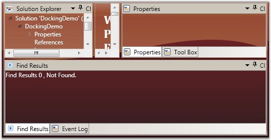

The CloseButton Template is used to get or set the control template for the close button used in the DockingManager control. These templates can give the customized appearance for the close button, while the entire Docking application is customized. As the close button is also of type Toggle button, you must create a control template with the target type set to Toggle button.
The following code illustrates this:
|
[XAML] <Window.Resources> <!--Declaring the template--> <ControlTemplate x:Key="closebuttontemplate" TargetType="{x:Type ToggleButton}"> <StackPanel> <Border x:Name="brdBack" Width="15" Height="15" Margin="0,0,1,1" BorderThickness="1" BorderBrush="Transparent" > <Path Name="pathButton" SnapsToDevicePixels="False" Stretch="Fill" StrokeThickness="2" Stroke="Red" Data="M109,51 L216,142 M215,52 L109,142" HorizontalAlignment="Center" VerticalAlignment="Center" Width="9" Height="8"/> </Border> </StackPanel> </ControlTemplate> </Window.Resources> <Grid> <!--Declaring Docking Manager--> <syncfusion:DockingManager CloseButtonTemplate="{StaticResource closebuttontemplate}"> <!--Children for the Docking Manager--> <StackPanel syncfusion:DockingManager.State="Dock" syncfusion:DockingManager.SideInDockedMode="Left"/> </syncfusion:DockingManager> </Grid> |
To apply the template using the C# code, use the following code snippet.
|
[C#] //Creating the instance of the Docking Manager. DockingManager = new DockingManager(); //Applying the template using the Resource look up logic. DockingManager.CloseButtonTemplate = (ControlTemplate)FindResource("closebuttontemplate"); |
 Note: For adding the Custom Close Button
template to the DockingManager, you must already have the DockingManager in
which you are going to add the Close Button template, because the
CloseButtonTemplate is an attached property.
Note: For adding the Custom Close Button
template to the DockingManager, you must already have the DockingManager in
which you are going to add the Close Button template, because the
CloseButtonTemplate is an attached property.

Figure 353: Docking Manager with Custom Close Button Template